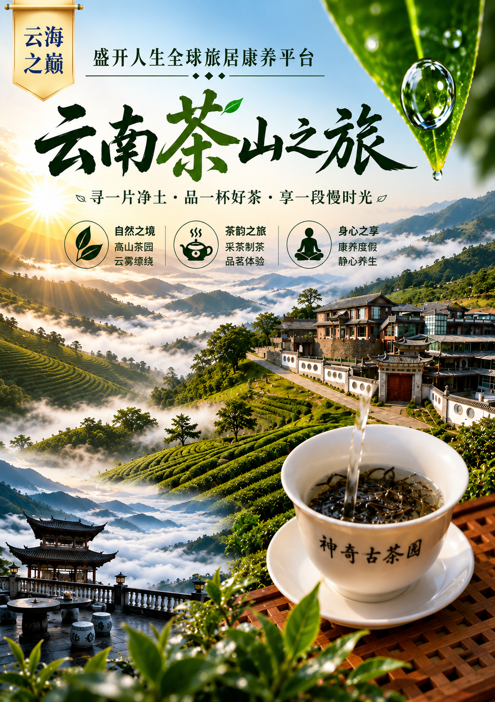

← 返回全部精选体验
02 · Yunnan Tea Mountain Wellness
—
云南茶山之旅
Yunnan Tea Mountain Wellness Journey
寻一片净土，品一杯好茶，享一段慢时光。在高山茶园与云海之间，让身心回到自然的节奏。
日期9/2 – 9/7
时长6天
主题茶文化与静心康养
Tea Mountain Slow Living
走进千年古茶山，遇见向往的慢生活
入住云雾缭绕的茶山，在千年古茶树间漫步，亲身体验采茶、制茶、炒茶全过程。随着茶香弥漫山谷，在自然与宁静中放慢脚步，感受身心疗愈与东方茶文化的魅力。
Why This Place
从城市的速度，回到山里的时间。
这不是一场匆匆打卡的旅行，而是一次真正住进山里的生活。晨雾、树影、庭院与茶香，让日常重新变得简单，也让身体和心绪慢慢松开。
Why Lincang
古茶树生长的地方，也适合重新安顿自己。
- 自然底色
- 高山、森林与云海，构成安静而丰盛的日常背景。
- 生活尺度
- 不赶景点，不追时间，让每一天保留呼吸与留白。
- 在地温度
- 与茶人、村落和土地相遇，感受真实而朴素的连接。
A Day On The Mountain
在茶山，时间不是被安排，而是被感受。
清晨在云雾与鸟鸣中醒来
上午沿古树小径走进山林
午后在庭院里喝茶、读书、发呆
夜晚听山风，安心入睡